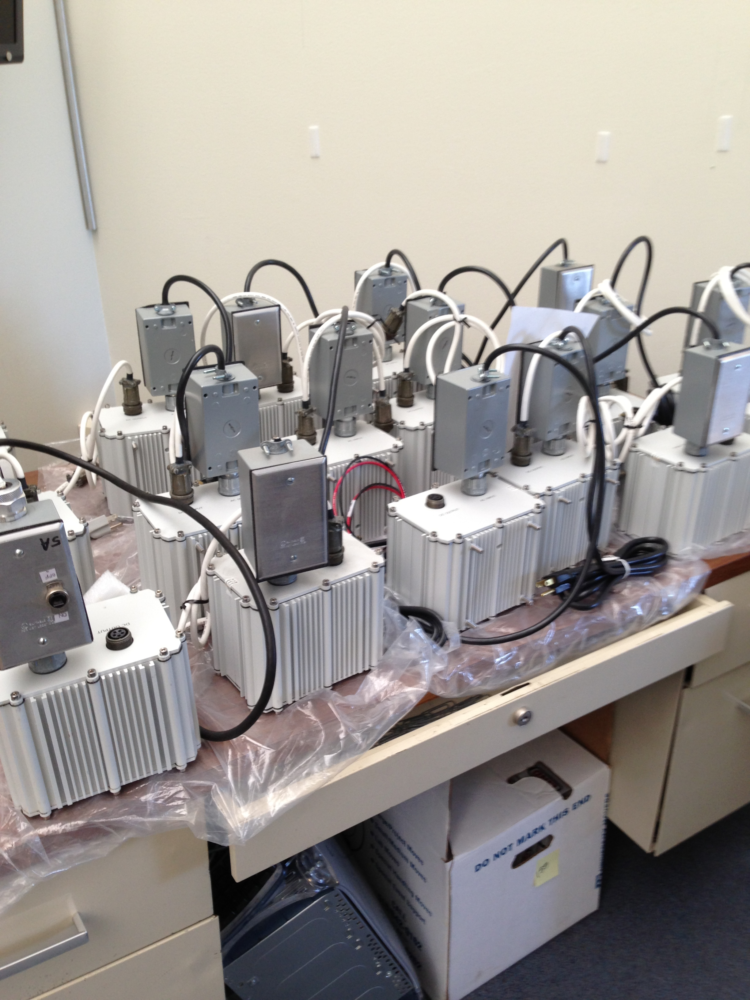
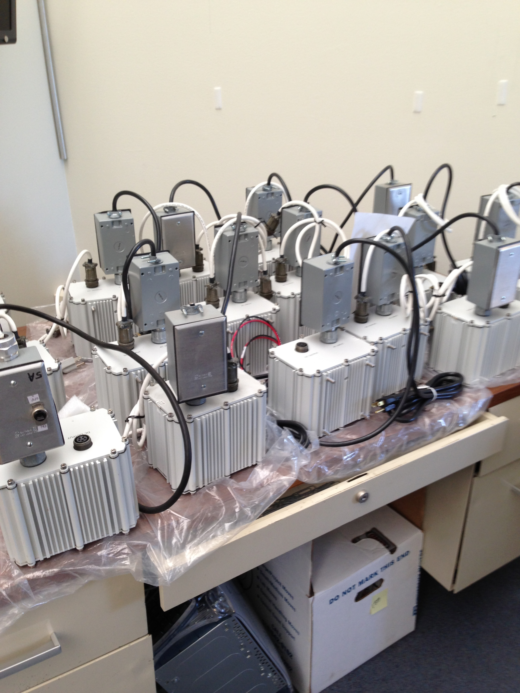
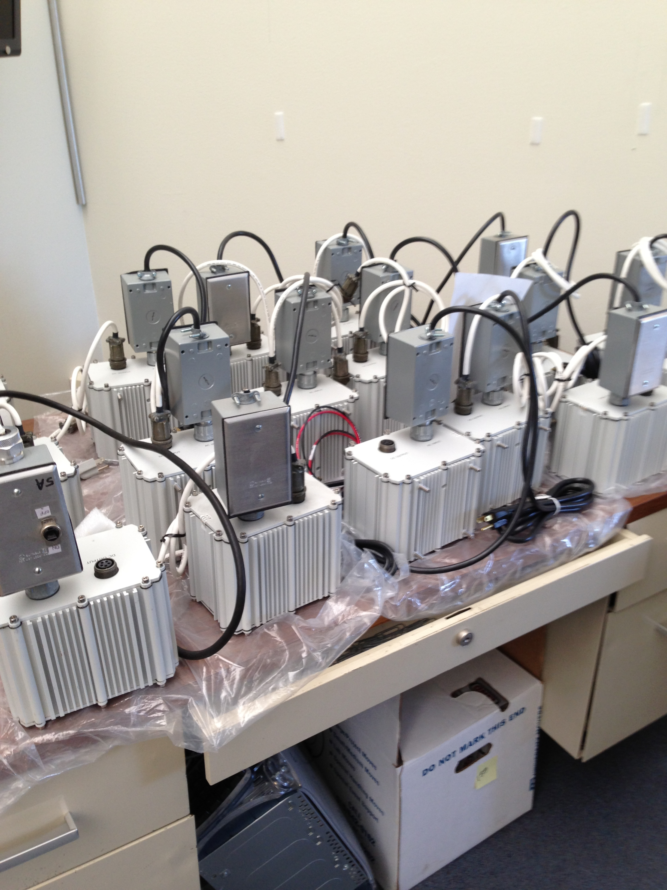
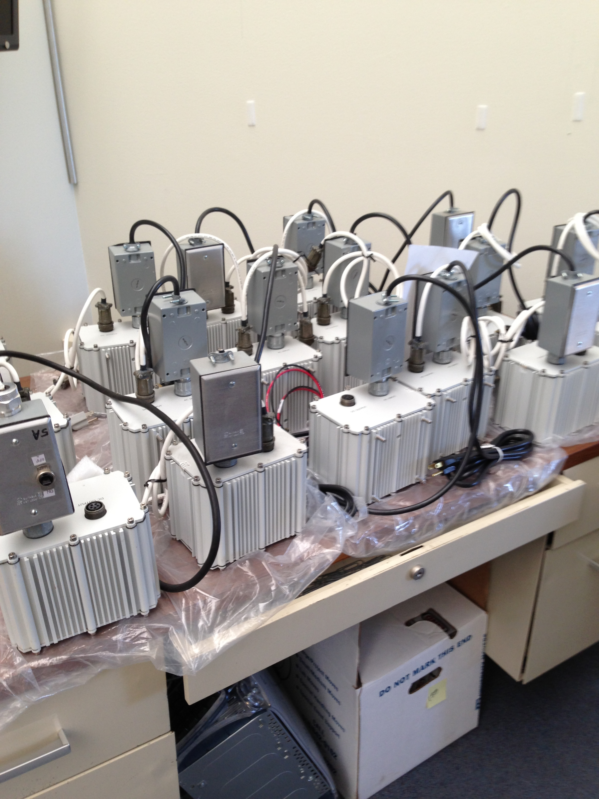
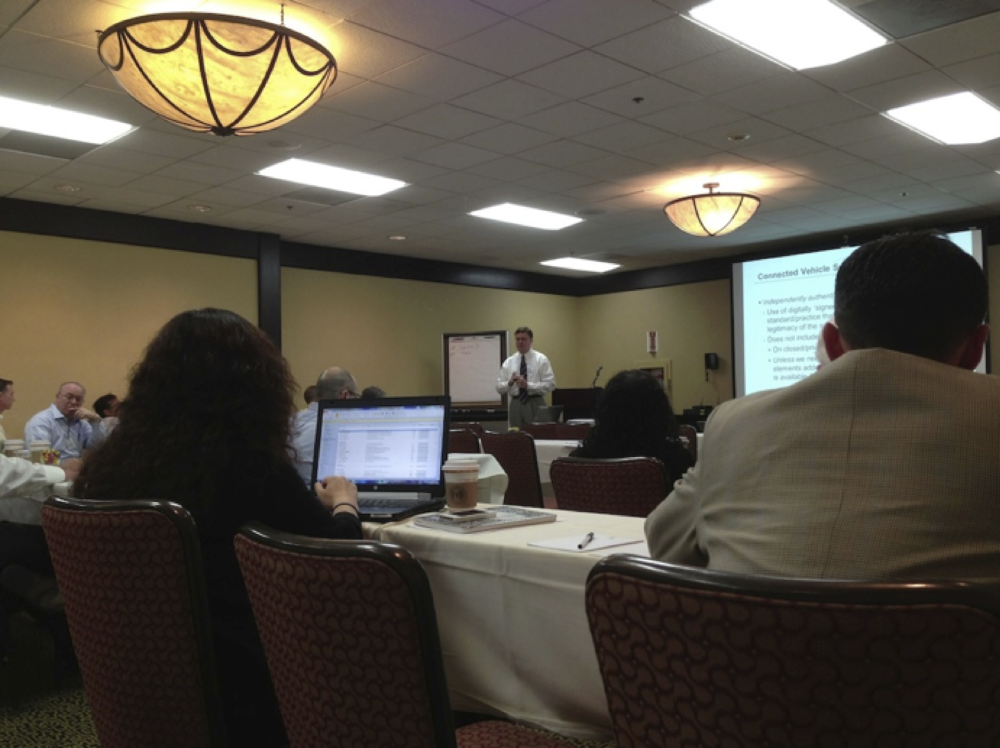
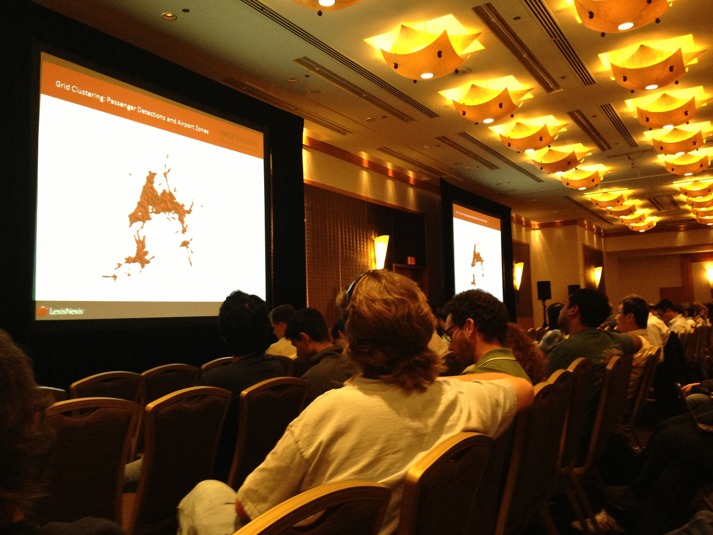
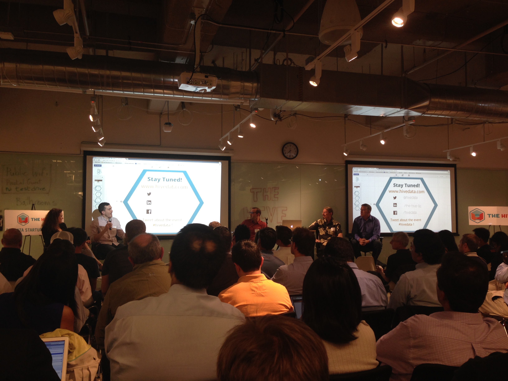
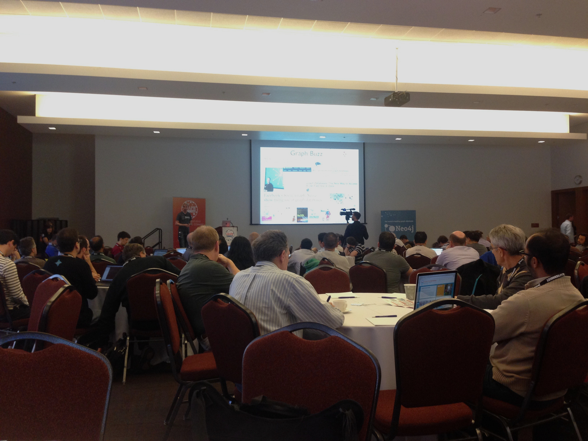
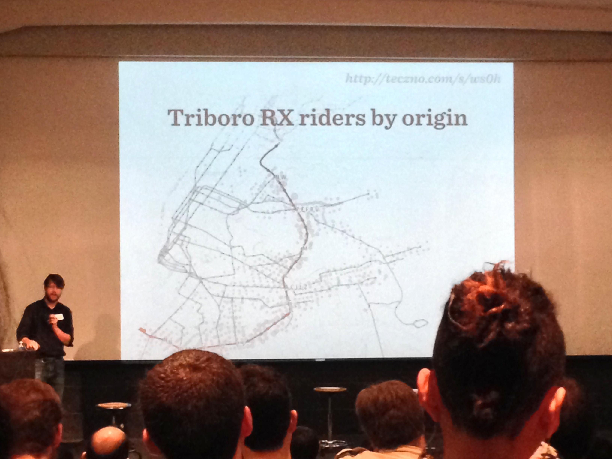
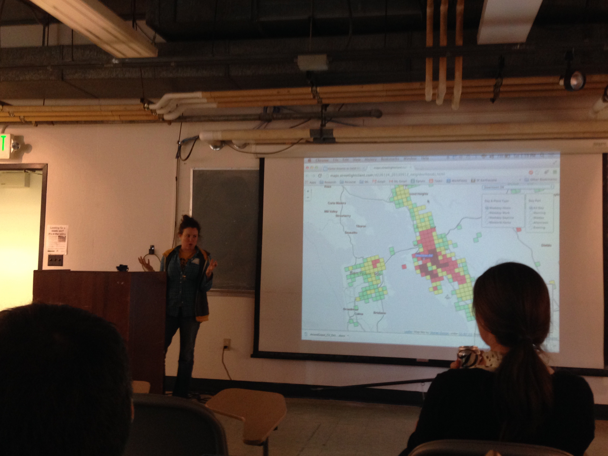

Part 2. Richmond Field Station

 



Workshop on Connected Vehicle Reference Implementation Architecture program (CVRIA) organized by the Intelligent Transportation Systems Joint Programs Office (ITS JPO). Multiple vendors and implementers of connected vehicle environment (CVE) commented on standards for new technologies and applications
Graphlab workhop, San Francisco, July 1st, 2013, 2013
Connected Cars Aps (Uber, Ford, Telefonica) San Francisco, October 2 2013
GraphConnect conference, October 3-4, 2013 , 2013
Transportation Conference, UC Berkeley November 16, 2013
Transportation Conference, UC Berkeley November 16, 2013
Part of a student group at UC Berkeley: VUD Lab